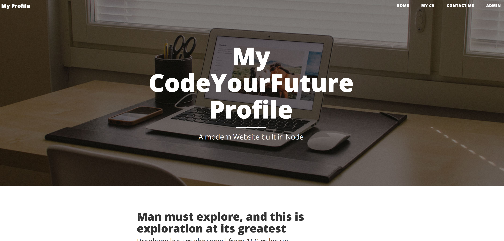
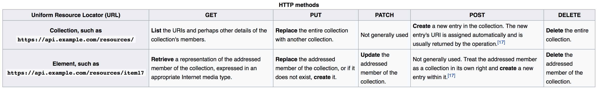

Node 2
What we will learn today?
- Recap
- Templating
- Callbacks and Callback hell
- APIs
- Deploying to Heroku
Before we start
Fork and Clone the repo - https://github.com/CodeYourFuture/express-workshop-2
Recap
Let's have a look at the repo we've just forked.
Package.json: Remember how in the last lesson we added a package.json file and added dependencies like express to it.
- What command did we use to create a package.json file
How did we add dependencies to it?
Today, the project comes with a package file already - this lists all the packages we need to run the project (instead of adding installed packages to the Git repo, which would take up a lot of memory, we just declare a list of dependencies in
package.json). Now, we can runnpm install, and the dependencies will be installed.
Server.js - this is the entry point for our application. Let's walk through the code and remember what it does.
- What is Express Static Middleware used for?
- What routes are defined?
- What Port does the server run on?
Let's run the server and check it in the browser. This is what you should see on your browser: 
- The theme used for this website is based on Bootstrap. You can get more open source Bootsrap-based themes from StartBootstrap
Exercise: Notice how the link to Contact me doesn't return a page - Let's add an enpoint to return a simple string this is a contact page.
Templating
Exercise: Let's change the text for the link, Contact, to Contact Information.
- How many files do you have to change? Wouldn't be nice if we could change one file and that reflects in all pages.
At the moment, we're just serving static HTML files from the public folder. NodeJS and ExpressJS allows us to build dynamic web pages.
A server-side dynamic web page is a web page whose construction is controlled by an application server that processes server-side scripts. In server-side scripting, parameters determine how the assembly of every new web page proceeds, including the setting up of more client-side processing.
Websites - a small detour
What is wrong with this website?
Is this one any better?
The final view is here
What was missing in the first example?

So what is the point of all these?

Template Engines
A template engine enables you to use static template files in your application. At runtime, the template engine replaces variables in a template file with actual values, and transforms the template into an HTML file sent to the client. This approach makes it easier to design an HTML page, as it reduces duplicate code (DRY).
Some popular template engines that work with Express are Pug, Mustache, and EJS.
Handlebars Templating Engine
We will use Handlebars as the templating engine for this class.
To add it to your project:
npm install --save express-handlebars
Then in your server.js, we need to configure the middleware for Handlebars.
// Add this to the top of your file
const exphbs = require('express-handlebars');
// Then these two lines after you initialise your express app
app.engine('handlebars', exphbs({ defaultLayout: 'main' }));
app.set('view engine', 'handlebars');
Let's look at the folder
views/layouts/main.handlebars
- There is a placeholder for body where the "body" get injected - can you find it?
- Notice the index.handlebars, my-cv.handlebars and admin.handlebars.
Then add these routes:
app.get('/', function (req, res) {
res.render('index');
});
Exercise: Add similar endpoints for
/my-cvand/admin.Exercise: Let's create a template called
contactand delete the endpoint we created earlier for/contact- render a view instead - similar to what we did with the previous endpoints.Exercise: Remember how we changed Contact to Contact Information? Try to change now Contact Information to Get in touch. Was it any easier?
Template passing info from Controller to Template
When we were using the static HTML pages from public/ folder - the heading text shown on top of the page (on the photo) used to change when we go to different pages. Now that we switched to the template, we've lost that behavior as the code for this part comes from the centralised Layout (views/layouts/main.handlebars).
How can we imitate that behavior without having to duplicate code or serve static files? Express and Handlebars allow you to pass data between the routes and the views. Here is how we can do it:
Let's modify the
/route to pass the title of the page.app.get('/', function (req, res) { res.render('index', { title: 'Etzali Profile', // insert your name instead }); });In
/views/layouts/main.handlebars, let's use the data we're passing to the template<div class="row"> <div class="col-lg-8 col-lg-offset-2 col-md-10 col-md-offset-1"> <div class="site-heading"> <!-- Notice the change in the next line --> <h1></h1> <hr class="small"> <span class="subheading">A modern Website built in Node</span> </div> </div> </div>
Exercise: Pass the
subheadingfrom the route to the view as well.Exercise: Change Title to default to "My Profile" if no title was provided. Look at #if helpers for Handlebars http://handlebarsjs.com/builtin_helpers.html
Partials
Handlebars allows for template reuse through partials. Partials are normal Handlebars templates that may be called directly by other templates. (Handlebars documentation)
Let's put the Menu in a partial.
- Go to
layout/main.handlebarsand cut the<nav>with all its contents, and move it to a new file calledmenu.handlebarsunderviews/partials.
Then to use the partial, add {{> menu}} in the place where you cut the original menu from.
More Templating
There is much more that can be done with Handlebars templating engine. Skim through the express-handlebars and handlebars documentation
For now, we will finish by using the each helper.
Dynamically loading the templates
{{#each posts}}
<div class="post-preview">
<a href="post.html">
<h2 class="post-title">
{{this.title}}
</h2>
<h3 class="post-subtitle">
{{this.summary}}
</h3>
</a>
</div>
{{/each}}
In the route, let's load the file in data/posts.json:
app.get('/', function (req, res) {
const filePath = __dirname + '/data/posts.json';
const callbackFunction = function(error, file) {
// we call .toString() to turn the file buffer to a String
const fileData = file.toString();
// we use JSON.parse to get an object out the String
const postsJson = JSON.parse(fileData);
// send the json to the Template to render
res.render('index', {
title: 'Etzali Profile', // insert your name instead
posts: postsJson
});
};
fs.readFile(filePath, callbackFunction);
});
Callbacks
In JavaScript, functions are first-class objects. That means they can be used in a first class manner like any other object since they are objects themselves. We can pass them as arguments to functions which is common technique in JavaScript for dealing with asynchronous behaviour. We have in fact already encountered callbacks when we looked at array methods such as .forEach(), .map() and .filter.
const evenNumbers = [2, 4, 6, 8];
evenNumbers.forEach(function( num ) {
console.log(num);
});
Here we are passing the function( num ) {console.log(num);} function as an argument to .forEach() to execute with each item in the array evenNumbers.
The above example is synchronous which means that code the callback is executed immediately. Let's look at an example where the code is executed asynchronously. We will use a setTimeout function to delay execution here. In most JavaScript applications asynchronous code execution could be in response to an event such as mouse click or data coming back from a server. We will look at both of those cases in detail in a future class.
function delay(callback){
setTimeout( callback, 2000 );
}
function logRandom(){
const value = Math.round( Math.random() * 10);
console.log( value );
return value;
}
delay(logRandom);
Key points
- Functions can be passed as arguments to other other function
- Functions that are passed as arguments are called callbacks
- Callbacks may be executed immediately or later
- If a callback is executed later, its return value is lost
Exercise: What other Asynchronous operations have we recently used in the Node code we've written?
Exercise: On the CV page, there is a button, Get Repos List, that doesn't work. There is code to make it work at
js\github-client.js. Addjs\github-client.jsto your pages.
The client-side code in github-client.js should look familiar.
Exercise: Identify all the callbacks in this code. Refactor the anonymous functions to their own variables and use the variables instead. (Bonus point if you use arrow functions)
Callback hell
In the code where we retrieve the repos data from Github, imagine if we had a requirement, that for each repo retrieved, we have to make another API call to retrieve all the available branches (there is a property called branches_url that we can use to get that info). And then, once we have all the branches, make another API call to get the info for each branch.
The code to do so, will look something similar to this:
var oReq = new XMLHttpRequest();
oReq.addEventListener('load', function() {
var oReq2 = new XMLHttpRequest();
oReq2.addEventListener('load', function() {
var oReq3 = new XMLHttpRequest();
oReq2.addEventListener('load', function() {
// 4. Now we finally have all the info we need and we can the info we retrieved from the three API calls.
});
oReq3.open('GET', url); // 3. third url for branch info
oReq3.send();
});
oReq.open('GET', url); // 2. second url for branches
oReq.send();
});
oReq.open('GET', url); // 1. first url for Repo
oReq.send();
The code above is very hard to understand and follow. Notice the pyramid shape }) - This is often called the callback hell.
APIs
APIs (Application Programming Interfaces) provide a way for applications to communicate with each other. We already consumed an API earlier in the day: Github API. We managed to communicate with Github and get important information. We - the client - can use this information in a number of different ways. Our client, in this case, is a Web page but it could have easily been a Mobile Application, or a TV setbox etc...
Let's watch this video about APIs - What is an API
Exercise: Let's expose the
posts.jsonas an API for other clients to consume through the url/api/get-posts. Hint: make useres.sendFile
REST API
REST (REpresentational State Transfer) and RESTful APIs provide a way (an architecture) for building APIs that is simple and scalable.
There are many constraints and aspects to building a REST API, but one fundamental constraint is the use of a URL (Uniform Resource Locator) and HTTP Methods (GET, POST, PUT, DELETE etc..)
In our endpoint that we just created /api/get-posts, the get part of the URL is redundant as the HTTP Method GET already tells that we are GETting a Resource. The Resource in this case is called posts.
Exercise: Let's rename our endpoint to
/postsso that it follows RESTful architecture.What would the endpoint for creating posts be called?
Watch: https://www.youtube.com/watch?v=7YcW25PHnAA - What is a REST API (up to 3 minutes)
REST is a big topic that we will revisit again. The table below from Wikipedia shows how a typical RESTful API would look like.
 Wikipedia
For now, remember when building APIs, to use Resource names to identify your endpoints and make use of the HTTP methods (Verbs) to describe operations performed on those resources.
Deploying to Heroku
Heroku is a cloud platform as a service (PaaS) that lets companies build, deliver, monitor, and scale apps. Developers use Heroku to deploy, manage, and scale modern apps. Heroku is fully managed, giving developers the freedom to focus on their core product without the distraction of maintaining servers, hardware, or infrastructure.
- Go to https://signup.heroku.com/ and signup for an account
- It will send a verification to your email so make sure you've entered a valid email
- Download the Heroku CLI from https://devcenter.heroku.com/articles/heroku-cli#download-and-install
- We need to do a small tweak to our app to be ready to be deployed on Heroku.
On server.js, add the process.env.PORT bit of code
app.listen(process.env.PORT || 3000, function () {
console.log("Server is listening on port 3000. Ready to accept requests!");
});
This tells our server to look for an environment variable called PORT and use it to run the server, otherwise use Port 3000. When the server runs on heroku, then Heroku sets the PORT to the correct value.
git add and commit your change.
- Now open the command line in the folder where you have your express-workshop repo running. If you run the command
git remote -v, you should see one remote origin pointing to your repo.
Run these commands:
heroku login
This will ask you for your heroku email and password that you used to register.
Once you're logged in:
heroku create
The heroku create command creates a new application on Heroku – along with a git remote that must be used to receive your application source.
If you check git remote -v, you should see a second remote called heroku.
Now push your code to heroku git push heroku master. The push will run few commands from Heroku, then you should see a url similar to https://some-random-name-XXXX.herokuapp.com - go to the URL and if all goes well, your app should be up and running.
To read more about Heroku and deploying Node Apps to Heroku, check https://devcenter.heroku.com/articles/git and https://devcenter.heroku.com/articles/getting-started-with-nodejs#set-up
Homework
- Deploy to Heroku if you haven't yet
- Add a route
posts/:postidthat displays a specific post - Read about route parameters on Express documentation- When the user clicks on a route in the home page, navigate them to your route.
- Amend your JSON structure to have a postId that you can use it to identify which post we want to display.
- Implement the Admin page.
- Write a posts endpoint that you can hit and that should save to the JSON file (use the helper functions we added under helpers/savePost)
- Make an AJAX call from the front end (the admin page) to your new endpoint.
- You might need to use
formidableorbody-parsermiddleware to get the data on the server.
- Consume a posts API built by another colleague (and deployed to Heroku) to display their latest blog posts. You can display the posts on any page that you see suitable (or add a new page).
- Secure the Admin page so that it's only visible if a certain query parameter is provided
- Can you go a bit further with adding proper security? Research the internet for solutions in Express.js
Resources
- Callback hell - http://callbackhell.com/
- Fetch - https://developer.mozilla.org/en-US/docs/Web/API/Fetch_API/Using_Fetch
- StackOverFlow answer to What is REST - https://stackoverflow.com/a/671132
- How I explained REST to my wife - http://web.archive.org/web/20130116005443/http://tomayko.com/writings/rest-to-my-wife